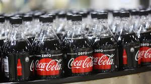

The Coca-Cola Company ([ðə ˈkoukə ˈkoulə ˈkʌmpənɪ], рус. компания «Кока-кола») — американская пищевая компания, крупнейший мировой производитель и поставщик концентратов, сиропов и безалкогольных напитков. Наиболее известным продуктом компании является напиток Coca-Cola. Входит в список Fortune 500 по итогам 2020 года (88-е место)[3]. Штаб-квартира находится в столице штата Джорджия, Атланте
Содержание
1 История
2 Биржа
3 Собственники и руководство
4 Деятельность
4.1 Финансовые показатели
5 Поддержка мирового спортивного движения
5.1 Организация и спонсирование эстафеты олимпийского огня
5.2 Поддержка чемпионата мира по футболу
6 Продукция
7 Критика
8 Примечания
9 Литература
10 Ссылки
В 1886 году фармацевт Джон Пембертон придумал этот напиток, как лечение зависимости от морфия, представил крупной аптеке Кока Колу: состоящий из воды, сахара, кофеина, экстрактов листьев коки и ореха кола, там напиток продавали по 5 центов за стакан. В 1888 году Пембертон скончался в нищете, а права были выкуплены у его вдовы предпринимателем Эйзой Кэндлером за $2300, который в 1892 году зарегистрировал эту компанию под названием Coca-Cola Company и за десять лет вместе с 50 сотрудниками создал национальный бренд Coca-Cola. В 1899 году было основано первое предприятие по производству этого напитка на правах франчайзинга. Такая модель, при которой головная компания ограничивалась производством концентратов напитков и их маркетингом, а сторонние компании покупали эти концентраты, разводили их подслащённой газированной водой, бутилировали и продавали, сохранялась большую часть XX века[4].|
В 1919 году Coca-Cola Company была продана группе инвесторов во главе с Эрнестом Вудраффом за $25 млн. Компания была перерегистрирована и стала публичной: было продано 500 000 акций по цене $40 за шт. Самое крупное в то время IPO в пищевой промышленности[5].
В 1943 году в Европе и на севере Африки были основаны заводы по производству Кока-Колы для поднятия боевого духа воевавших там американских солдат, а также для распространения этого напитка по всему миру[5].
В 1960 году была куплена The Minute Maid Corporation, а в следующем году был начат выпуск напитка Sprite[5].
В 190 году за $750 млн была куплена кинокомпания Columbia Pictures, однако уже через пять лет была продана другойкинокомпании, Tri-Star Pictures[5].
В 1986 году The Coca-Cola Company непосредственно контролировала 11 % производства напитков под своими брендами и решила увеличить эту долю, купив несколько бутилирующих компаний, в частности JTL и Beatrice, но, из-за нехватки собственных средств, вынуждена была сформировать отдельную компанию, названную Coca-Cola Enterprises (англ.)рус., пустив 51 % её акций в свободное обращение[4].
В 1990 году объём продаж впервые пересёк отметку в $10 млрд. В 1999 году The Coca-Cola Company приобрела права на реализацию продуктов под торговыми марками Schweppes, Canada Dry, Dr Pepper и Crush[en] в 157 странах, исключая США, Канаду и Мексику, а также часть Европы. В 2002 году на рынки был представлен напиток Vanilla Coke[5].
В 2010 году Coca-Cola Enterprises перешла в полную собственность The Coca-Cola Company[6]. После завершения выкупа акций была основана новая компания Coca-Cola Enterprises, в которую были выделены подразделения старой в западной Европе. В ноябре 2015 года эта компания объединилась с Coca-Cola Iberian Partners SA и Coca-Cola Erfrischungsgetränke AG в компанию Coca-Cola European Partners (англ.)рус.[7].
24 сентября 2018 года The Coca-Cola Company приобрела французский бренд освежающих напитков с фруктовым нектаром, родниковой воды и содовой Tropico[fr]. Данный шаг был обусловлен тем, что французский бренд демонстрировал устойчивый рост на рынке фруктовых напитков (рост на 4,9 % в период 2014—2017 год)[8].
8 марта 2022 года компания приостановила свою деятельность в России[9].

БиржаСертификат на покупку равноценной 20 обычным акциям акции класса A The Coca-Cola Company. Выпущен 20 февраля 1929 года.С 1919 года Coca-Cola является публичной компанией[10], её акции размещены на Нью-Йоркской фондовой бирже под тикером "KO".[11] Купленная в 1919 году за 40 долл. одна акция компании с учётом реинвестирования всех дивидендов в 2012 году стоила бы 9,8 млн. долл. (т. е. ежегодный рост цены акции составляет 10,7% с поправкой на инфляцию).[12] Банк-предшественник SunTrust, получивший в 1919 году 100 тыс. долл. акциями Coca-Cola за андеррайтинг, в 2012 году продал их за 2 млрд. долл.[13] В 1987 году Coca-Cola снова вошла в число 30 компаний, чьи акции составляет основу индекса Dow Jones Industrial Average, ранее компания входила в его состав с 1932 по 1935 год.[14] С 1920 года компания выплачивает дивиденды, к 2019 году постоянный рост их размера длится 57 лет.[15][16][17][18]< Собственники и руководство Одно из зданий The Coca-Cola Company в Атланте Компания является одной из крупнейших в США, её акции допущены к торговле на площадке NYSE и входят в индексы DJIA и S&P 500. Крупнейшими акционерами являются: Berkshire Hathaway, Inc — 9,25 %, The Vanguard Group — 6,33 %, State Street Corporation — 3,82 %, Capital World Investors — 3,44 %, BlackRockFund Advisors — 2,66 %, Fidelity Management and Research Company — 2,04 %, Columbia Insurance Company — 1,85 %, Capital Research Global Investors — 1,83 %, Wellington Management Company — 1,45 %[19]. Другим фондам по отдельности принадлежит менее 3 % акций. Председатель совета директоров и генеральный директор с июля 2008 года до мая 2017 — Мухтар Кент (до этого времени эти должности занимал Невилл Исделл). С 1 мая 2017 года генеральным директором компании назначен Джеймс Квинси.
ДеятельностьОсновная продукция компании — безалкогольные напитки. Компания продаёт концентраты, сиропы и напитки более чем в 200 странах. Основной регион деятельности The Coca-Cola Company — США, на него в 2015 году пришлось $20 млрд из $44 млрд выручки. В других странах Coca-Cola в основном представлена региональными бутилирующими компаниями, действующими на правах франчайзинга и покупающими у The Coca-Cola Company концентраты. В 2015 году продажи концентратов и сиропов под маркой «Coca-Cola» (и её вариаций) составили примерно 37 % в общем объёме выручки[20].Основными бутилирующими компаниями являются[21]: Coca-Cola European Partners (англ.)рус. — действует в 13 странах западной Европы, в первую очередь в Испании, Германии, Великобритании и Франции, штаб-квартира в Лондоне; крупнейшая бутилирующая компания в системе Coca-Cola по размеру выручки, ей принадлежит 50 заводов[7]; Coca-Cola HBC — действует в Европе (кроме западной Европы), России и Нигерии; The Coca-Cola Company принадлежит 23 % акций;Coca-Cola Amatil (англ.)рус. — Австралия, Новая Зеландия и прилегающие островные государства; The Coca-Cola Company принадлежит 29 % акций; Coca-Cola FEMSA (англ.)рус. — Мексика; The Coca-Cola Company принадлежит 29 % акций; Arca Continental (англ.)рус. — Мексика; Coca-Cola Bottlers Philippines, Inc. (англ.)рус. — Филиппины; Coca-Cola Beverages Africa (англ.)рус. — южная и восточная Африка, штаб-квартира в Порт-Элизабет, ЮАР Coca-Cola Korea (англ.)рус. — Южная Корея; Coca-Cola Icecek (англ.)рус. — Турция, юго-западная Азия; Swire Group — Гонконг, Китай, Тайвань; штаб-квартира в Гонконге; Kirin Company (англ.)рус. — Япония Embotelladora Andina S.A. (исп.)рус. — Чили, юг Южной Америки. Компании принадлежит 5 из 6 самых продаваемых мировых брендов безалкогольных напитков — Coca-Cola, Diet Coke, Fanta, Schweppes и Sprite. Основным сырьём для компании являются пищевые и непищевые подсластители. Используемые пищевые подсластители в США — это фруктозный кукурузный сироп, вне США — сахароза. Основные непищевые подсластители — аспартам, сахарин и др. Деятельность компании распределена по регионам (выручка бутилирующих компаний не включается): Евразия и Африка — выручка 2,5 млрд; Европа — выручка 5 млрд; Латинская Америка — выручка 4 млрд; Северная Америка — выручка 22 млрд; Азиатско-Тихоокеанский регион — выручка 5 млрд; Инвестиции в бутилирующие компании — выручка 6,7 млрд[20]. Финансовые показатели
Финансовые показатели в млрд долларов США[2][20][22][23] Год 2001 2002 2003 2004 2005 2006 2007 2008 2009 2010 2011 2012 2013 2014 2015 2016 2017 2018 2019 2020 2021 Оборот 17,37 19,39 20,86 21,74 23,1 24,09 28,86 31,94 30,99 35,12 46,54 48,02 46,85 46 44,29 41,86 36,21 34,30 37,27 33,01 38,66 Чистая прибыль 3,969 3,05 4,347 4,847 4,872 5,08 5,981 5,807 6,824 11,81 8,584 9,019 8,584 7,098 7,351 6,550 1,283 6,476 8,985 7,768 9,804 Активы 22,55 24,47 27,41 31,44 29,43 29,96 43,27 40,52 48,67 72,92 79,97 86,17 90,06 92,02 90,09 87,27 87,90 83,22 86,38 87,30 94,35 Собственный капитал 11,37 11,8 14,09 15,94 16,36 16,92 21,74 20,47 25,35 31,32 31,92 33,17 33,44 30,56 25,76 23,22 18,98 19,06 21,10 21,28 24,86 На протяжении последних двенадцати лет (2000—2012) Coca-Cola являлась самым дорогостоящим брендом в мире. В 2009 году компании удалось увеличить стоимость бренда на 3 % и она составила $ 68,7 млрд[24]. По состоянию на 2016 год в компании работает 123 тысячи человек, вместе с бутилирующими компаниями — около 700 тысяч, по этому показателю Coca-Cola входит в десятку крупнейших частных работодателей[7]. В списке крупнейших публичных компаний США Fortune 500 в 2015 году заняла 62-е место (годом ранее 63-е место), в списке крупнейших компаний в мире Fortune Global 500 в 2015 году заняла 232-е место[3]. В списке крупнейших публичных компаний в мире Forbes Global 2000 за 2016 год заняла 83-е место, в том числе 27-е по рыночной капитализации, 57-е по чистой прибыли, 177-е по обороту и 296-е по активам; также заняла 4-е место в списке самых дорогих брендов[25]. Поддержка мирового спортивного движения Бутылка «Кока-Колы» с эмблемой олимпийского движения The Coca-Cola Company — старейший спонсор олимпийского движения. Впервые в этом качестве она выступила в 1928 году. К 2013 году «Кока-Кола» сотрудничала более чем с 190 национальными Олимпийскими комитетами, в том числе с Олимпийским комитетом России. Некоторые факты участия компании в организации олимпийских мероприятий: в 1932 году в Лос-Анджелесе «Кока-Кола» преподнесла в дар местному олимпийскому стадиону табло олимпийских рекордов;
в 1952 году на зимней олимпиаде в Осло компания предоставила вертолёт для сбора средств в пользу норвежских олимпийцев; позднее вертолёт помогал регулировать дорожное движение в норвежской столице; на Олимпийских играх 1960 года в Риме компания сделала подарок спортсменам и зрителям — грампластинку с записью музыкального хита тех дней, песни «Arrivederci Roma»; в 1964 году на олимпиаде в Токио «Кока-Кола» взяла на себя издание бесплатных карт города, уличных указателей, проспектов о достопримечательностях Токио и Японии, подготовила и выпустила (приобретший большую популярность) англо-японский разговорник; в 1968 году «Кока-Кола» взяла на себя расходы по телевизионной рекламе Олимпиады в Мехико, тем самым приобщив миллионы зрителей к духу и азарту самых престижных соревнований мира; в 1979 году «Кока-Кола» оказала финансовую помощь Национальному олимпийскому комитету США в создании Американского олимпийского зала славы; в 1987 году «Кока-Кола» стала первым спонсором олимпийского музея в Лозанне, подписав соглашение с Международным олимпийским комитетом на сумму 1 млн $; в 1988 году открывал и закрывал зимние Олимпийские игр в Калгари так называемый Всемирный хор «Кока-Кола», в состав которого вошли 43 хориста из 23 стран; хор исполнял в том числе одну из «титульных» мелодий олимпиады «Can’t You Feel It?»; с 1992 года функционирует радио «Кока-Кола», которое в оперативном порядке транслирует информацию со спортивных мероприятий во время олимпиад. В 2000 году на олимпиаде в Сиднее по каналам этого радио вещали 58 радиостанций из 13 стран мира; на олимпиаде в Атланте в 1996 году «Кока-Кола» организовала международную ярмарку тематических значков, в ходе которой было обменяно около 3 млн единиц; такие ярмарки, приуроченные к олимпийским играм и финансируемые «Кока-Колой», стали традиционными; в 2002 к Олимпийским играм в Солт-Лейк-Сити «Кока-Кола» заказала известному художнику и дизайнеру П. Максу (англ.) написать мозаичный настенный узор. В мозаику вошли работы, которые были созданы детьми со всех Соединённых Штатов во время олимпийской эстафеты в 2002 году. Макс скомпоновал и оформил эти работы в гигантском настенном панно, в котором в художественной форме воплотил дух Олимпиады. Организация и спонсирование эстафеты олимпийского огня С 1992 года компания The Coca-Cola Company выступает в числе организаторов и спонсоров эстафеты олимпийского огня. С 1996 года — эксклюзивный представитель этой эстафеты, взявший на себя основные заботы по её организации на олимпийских играх в Атланте (1996), Нагано (1998), Солт-Лейк Сити (2002; одна из крупнейших эстафет за всю историю: общее расстояние 21 726 км, прошла через 46 американских штатов), Афинах (2004), Турине (2006) и Пекине (2008).
Для зимней Олимпиады в Ванкувере (2010) компания The Coca-Cola Company (совместно с Королевским банком Канады) выступила организатором и спонсором эстафеты олимпийского огня по территории Канады. Прошедшая в период с 30 октября 2009 12 февраля 2010 года, эстафета охватила дистанцию около 45 000 км, пройдя через более чем 1000 населённых пунктов; общее количестве факелоносцев (отобранных через общественные программы «Кока-Колы») превысило 12 000 человек. Поддержка чемпионата мира по футболу С 1974 года компания The Coca-Cola Company — официальный партнёр ФИФА, а с 1978 года — официальный спонсор чемпионата мира по футболу. В 2006 году по инициативе компании оригинальный Кубок мира ФИФА отправился в первое кругосветное путешествие (англ. Trophy Tour). Проделав путь длиной в 102 570 км, кубок объездил 31 город в 29 странах. Ещё более масштабным стал следующий тур, который стартовал 21 сентября 2009 года в Цюрихе. Маршрут общей протяжённостью 138 902 км был проложен через 83 страны мира, в том числе уникальный спортивный трофей был представлен в России. Продукция The Coca-Cola Company производит концентраты, сиропы, безалкогольные напитки и полностью или частично владеет более чем 350 торговыми марками, как глобальными, так и региональными. Среди них: Coca-Cola, Diet Coke/Coca-Cola Light, Coca-Cola Zero, Fanta, Sprite, Добрый, Моя семья, Minute Maid[en] (сокосодержащие напитки), Minute Maid Pulpy, Georgia[en] (холодный кофе, Япония), Powerade[en], Schweppes, Blazer, Aquarius, Bonaqua/Bonaqa, Gold Peak (холодный чай, Северная Америка), Dasani, FUZE TEA, Del Valle (соки, Мексика и Бразилия), Simply (соки, Северная Америка), Glacéau Smartwater (вода, Северная Америка и Великобритания), Glacéau Vitaminwater, Ice Dew (вода, Китай)[20], Tropico (фруктовые нектары, Франция)[8]. См. также список продукции Coca-Cola[en]. Критика The Coca-Cola Company обвиняется в травле и убийствах профсоюзных активистов на своих заводах в Южной Америке, нарушении прав человека, расизме, а также в загрязнении окружающей среды[26][27][28]. 4 марта 2022 года популярные украинские супермаркеты начали отказываться от сотрудничества с The Coca-Cola Company в связи с тем что компания продолжила работу в России несмотря на военное вторжение на Украину[29]. Примечания
KO.N - Coca-Cola Co Profile (англ.). Reuters. Дата обращения: 4 марта 2022. Архивировано 4 марта 2022 года. Annual Report 2021 on SEC Filing Form 10-K (англ.). The Coca-Cola Company (22 февраля 2022). Дата обращения: 4 марта 2022. Архивировано 4 марта 2022 года. Coca-Cola - Stock Price, Financials & News (англ.). Fortune. Дата обращения: 3 сентября 2016. Архивировано 2 сентября 2016 года. Coca-Cola Enterprises, Inc. History (англ.). Funding Universe. Дата обращения: 10 сентября 2016. Архивировано 23 февраля 2017 года. History of the Coca-Cola Company (англ.). Funding Universe. Дата обращения: 3 сентября 2016. Архивировано 11 сентября 2016 года. The Coca-Cola Company Completes Tranaction of the Coca-Cola Enterprises (англ.). BevNET.com (4 октября 2010). Дата обращения: 10 сентября 2016. Архивировано 29 мая 2016 года. Coca-Cola Enterprises, Coca-Cola Iberian Partners and Coca-Cola Erfrischungsgetränke AG To Form Coca-Cola European Partners (англ.). BusinessWire (6 августа 2015). Дата обращения: 10 сентября 2016. Архивировано 11 сентября 2016 года. Coca-Cola приобрела французский бренд Tropico. ИА REGNUM. Дата обращения: 26 сентября 2018. Архивировано 26 сентября 2018 года. RU business pause (рус.) ?. www.coca-cola.ru. Дата обращения: 9 марта 2022. Архивировано 13 марта 2022 года. Butler, Tischler, 2015, p. 38. The Coco-Cola Company. Архивировано 28 февраля 2019 года. Wiederman, Adam J. One Share of Stock Now Worth $9.8 Million – Is It Really Possible?. DailyFinance.com (14 августа 2012). Дата обращения: 1 ноября 2012. Архивировано 15 ноября 2012 года. Schaefer, Steve SunTrust Sells Coca-Cola Stake After 93 Years, Collects A Tidy Two Million Percent Return (англ.). Forbes. Дата обращения: 30 октября 2019. Архивировано 30 октября 2019 года.
Decades of Great Performance From 9 Dow Stocks. DailyFinance.com (5 ноября 2011). Дата обращения: 1 ноября 2012. Архивировано 4 ноября 2012 года. KO: Dividend Date & History for Coca-Cola Co.. Dividend.com. Дата обращения: 6 июня 2019. Архивировано 6 июня 2019 года. Owusu, Tony Coca-Cola Raises Dividend for 57th Consecutive Year. TheStreet (21 февраля 2019). Архивировано 28 февраля 2019 года. Coca-Cola shareholders OK 2-for-1 stock split. USA Today. Дата обращения: 1 ноября 2012. Архивировано 9 октября 2012 года. Investors Info: Dividends. coca-colacompany.com. Дата обращения: 27 февраля 2019. Архивировано 22 апреля 2019 года. Информация о владельцах для Coca-Cola Co. msn money (Microsoft). Дата обращения: 10 сентября 2016. Архивировано 17 сентября 2016 года. Annual Report 2015 on SEC Filing Form 10-K (англ.). The Coca-Cola Company (25 февраля 2016). Дата обращения: 3 сентября 2016. Архивировано 15 сентября 2016 года. The Coca-Cola Company - Company Profile (англ.). Vault.com. Дата обращения: 3 сентября 2016. Архивировано 16 августа 2016 года. Annual Report 2005 on SEC Filing Form 10-K (англ.). The Coca-Cola Company (28 февраля 2006). Дата обращения: 3 сентября 2016. Архивировано 4 июня 2011 года. Annual Report 2010 on SEC Filing Form 10-K (англ.). The Coca-Cola Company (28 февраля 2011). Дата обращения: 3 сентября 2016. Архивировано 18 апреля 2016 года. Соса-Cola — самый дорогостоящий бренд в мире. Дата обращения: 18 сентября 2009. Архивировано 16 февраля 2011 года. Coca-Cola on the Forbes World's Most Innovative Companies List (англ.). Forbes. Дата обращения: 3 сентября 2016. Архивировано 2 сентября 2016 года. «Не дай себе засохнуть» или «Открой себя». Дата обращения: 7 сентября 2017. Архивировано 9 сентября 2013 года. В Колумбии объявлено о начале общенационального бойкота продукции компании Coca-Cola. Дата обращения: 7 сентября 2017. Архивировано 8 сентября 2017 года. Criticism of Coca-Cola (англ.) "Кока-кола, иди нах*й!": супермаркеты в Украине отказываются от сотрудничества с брендом (фото). ТСН.ua (4 марта 2022). Дата обращения: 4 марта 2022. Архивировано 4 марта 2022 года.
Tepaga